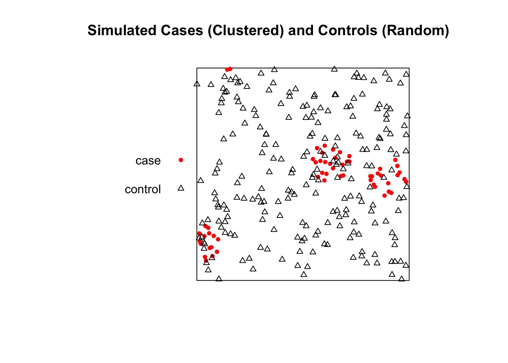
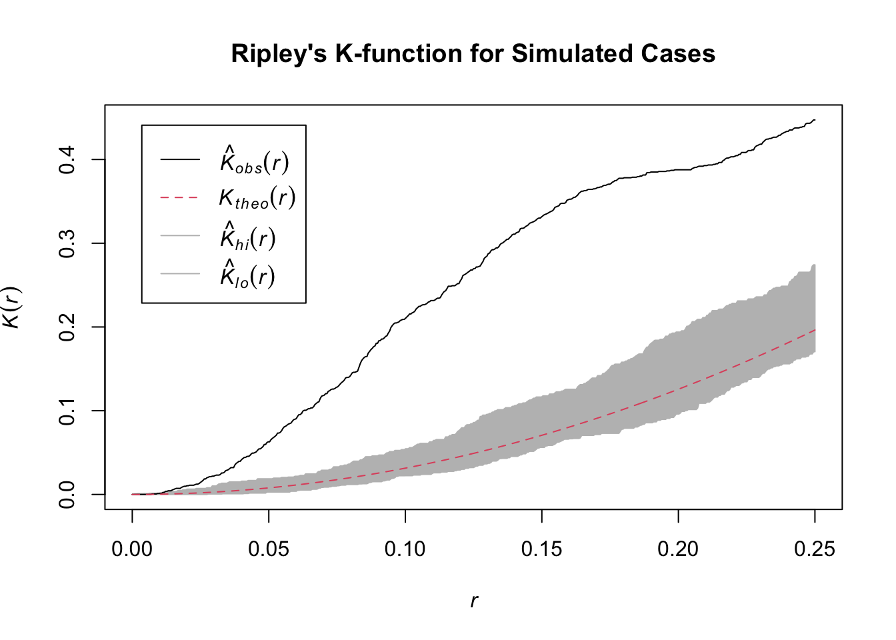
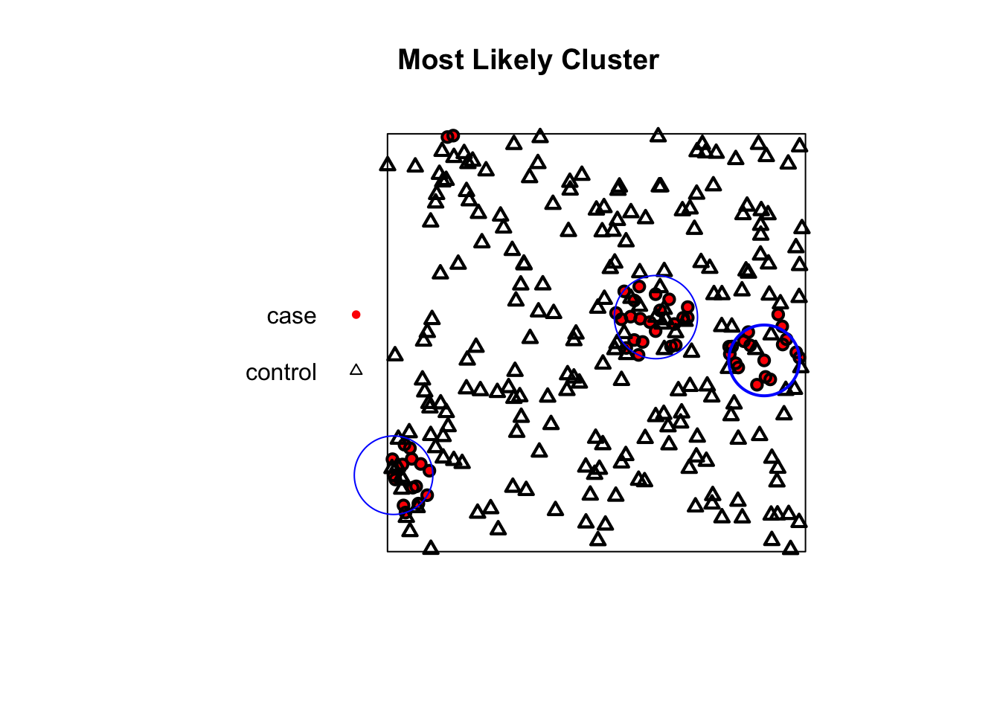

Show/Hide Code
# install.packages("spdep")
# install.packages("spatstat.geom")
# install.packages("spatstat.explore")
# install.packages("smacpod")An Outlook on Spatial Statistics
This module introduces several methods for formally exploring and testing for clustering in spatial data. A key question in spatial epidemiology is whether disease cases are clustered together, and if so, where these clusters are located. Identifying non-random patterns can provide crucial insights into disease transmission and help target public health interventions.
We will explore methods for two main types of spatial data:
Areal Data: Analyzing rates or counts within defined boundaries (e.g., states or districts).
Point Pattern Data: Analyzing the specific locations of individual case events.
First we will load the necessary R packages. These include sf for handling spatial data, spdep for spatial dependence analysis, spatstat for point pattern analysis, and smacpod for scan statistics.
When you have data aggregated into polygons (like states), you often want to know if areas with high values are located near other areas with high values. This is called spatial autocorrelation. The most common statistical test for this is Moran’s I.
We will use the us_states dataset from the spData package to test for global spatial clustering in median income.
# 1. Load the data
data("us_states", package = "spData")
data("us_states_df", package = "spData")
us_states <- us_states %>%
left_join(us_states_df, by = c( "NAME" ="state"))
# 2. Define Neighbors
# We first determine which states are neighbors using "queen" contiguity,
# meaning they are neighbors if they share a border or a corner.
state_neighbors <- poly2nb(us_states, queen = TRUE)
# 3. Assign Spatial Weights
# We convert the neighbor list into a weights matrix.
state_weights <- nb2listw(state_neighbors, style = "W")
# 4. Run the Global Moran's I Test
# We test for autocorrelation in the median income variable.
moran.test(us_states$median_income_15, listw = state_weights)
Moran I test under randomisation
data: us_states$median_income_15
weights: state_weights
Moran I statistic standard deviate = 4.5336, p-value = 2.899e-06
alternative hypothesis: greater
sample estimates:
Moran I statistic Expectation Variance
0.407524868 -0.020833333 0.008927291 Interpretation: The output shows a very small p-value, indicating that the spatial pattern of median income is not random. The positive Moran I statistic confirms that states with similar median incomes are clustered together.
Now we will use Local Moran’s I to find the specific locations of these income clusters.
# 1. Calculate Local Moran's I for each state
lisa_results <- localmoran(us_states$median_income_15, listw = state_weights)
# 2. Create a Moran Scatter Plot
# This plots the income in a state vs the average income of its neighbors.
# The four quadrants represent the cluster types: High-High, Low-Low, High-Low, Low-High.
moran.plot(us_states$median_income_15, listw = state_weights,
xlab = "Median Income", ylab = "Spatially Lagged Median Income")# 3. Map the Significant Clusters
# Let's identify the cluster type for each state and add it to our data.
us_states$lisa_I <- lisa_results[, "Ii"]
us_states$lisa_p_value <- lisa_results[, "Pr(z != E(Ii))"]
us_states$lisa_quadrant <- attr(lisa_results, "quadr")[, "pysal"]
# Keep only the statistically significant clusters (p < 0.05)
significant_clusters <- us_states[lisa_results[, "Pr(z != E(Ii))"] < 0.05, ]
# Create the map
tm_shape(us_states) + tm_polygons(col = "gray85", border.col = "white") +
tm_shape(significant_clusters) +
tm_polygons("lisa_quadrant", palette = "viridis", title = "Cluster Type") +
tm_layout(main.title = "Significant Local Clusters of Median Income")Of course. Here is a complete, self-contained example using simulated data to demonstrate the concepts of Ripley’s K-function and the spatial scan statistic.
This example generates a “clustered” set of points for our cases and a “random” set of points for our controls, allowing us to test the methods.
When you have the precise locations of individual events, you can use point pattern analysis to see if they are clustered. Since the original datasets are unavailable, we’ll generate our own data to illustrate the methods.
First we need to load the spatstat library. We will then generate two sets of points within a unit square:
Cases: A clustered point pattern. We’ll use rMatClust to simulate 5 parent events that generate a total of 100 child points clustered around them.
Controls: A completely random point pattern using rpoispp.
# Load the required library for spatial analysis
library(spatstat)
# Step 1: Define the observation window (a simple unit square)
win <- owin(c(0, 1), c(0, 1))
# Step 2: Generate clustered "case" data
# We'll simulate a Matern Cluster process with 5 parent points,
# a cluster radius of 0.1, and an average of 20 children per parent.
cases_ppp <- rMatClust(kappa = 5, scale = 0.1, mu = 20, win = win)
# Let's label these as "disease"
marks(cases_ppp) <- factor("case")
# Step 3: Generate random "control" data
# We'll simulate a random Poisson process with 200 points.
controls_ppp <- rpoispp(lambda = 200, win = win)
# Let's label these as "control"
marks(controls_ppp) <- factor("control")
# Step 4: Combine cases and controls into a single marked ppp object
# The 'superimpose' function is perfect for this.
all_points_ppp <- superimpose(cases_ppp, controls_ppp)
# Let's verify the combined object
print("Combined PPP object with cases and controls:")[1] "Combined PPP object with cases and controls:"Marked planar point pattern: 261 points
Multitype, with levels = case, control
window: rectangle = [0, 1] x [0, 1] units
The K-function summarizes spatial dependence over a range of distances. We compare the observed K-function from our data to what we would expect under complete spatial randomness (CSR).
We will analyze only the “case” points to see if they are clustered.
Generating 99 simulations of CSR ...
1, 2, 3, 4, 5, 6, 7, 8, 9, 10, 11, 12, 13, 14, 15, 16, 17, 18, 19, 20,
21, 22, 23, 24, 25, 26, 27, 28, 29, 30, 31, 32, 33, 34, 35, 36, 37, 38, 39, 40,
41, 42, 43, 44, 45, 46, 47, 48, 49, 50, 51, 52, 53, 54, 55, 56, 57, 58, 59, 60,
61, 62, 63, 64, 65, 66, 67, 68, 69, 70, 71, 72, 73, 74, 75, 76, 77, 78, 79, 80,
81, 82, 83, 84, 85, 86, 87, 88, 89, 90, 91, 92, 93, 94, 95, 96, 97, 98,
99.
Done.
Interpretation: The plot shows the theoretical K-function for a random pattern (red dashed line) and a grey confidence envelope. The solid black line is the observed K-function for our simulated case data. Because the black line rises significantly above the grey envelope, it correctly indicates that our generated points are more clustered than would be expected by random chance.
The spatial scan statistic is a method used to detect and evaluate the location and significance of spatial clusters. It works by moving a circular window across the map and comparing the rate of cases to controls inside the circle versus outside.
We use our combined all_points_ppp object which contains both cases and controls.
method: circular scan
distance upperbound: 0.1
realizations: 99# --- Plotting the New Result ---
# First, plot the points using the corrected plotting code from before
plot(all_points_ppp,
main = "Most Likely Cluster",
cols = c("red", "black"),
chars = c(16, 2),
cex = 0.8)
# Now, add the new, smaller cluster circle to the plot
plot(scan_result_small, add = TRUE, border = "blue", lwd = 2)
Interpretation: The blue circle on the map shows the location and size of the statistically significant cluster of “cases” relative to “controls”. As expected, the algorithm has successfully identified one of the clusters we intentionally generated in our simulation.